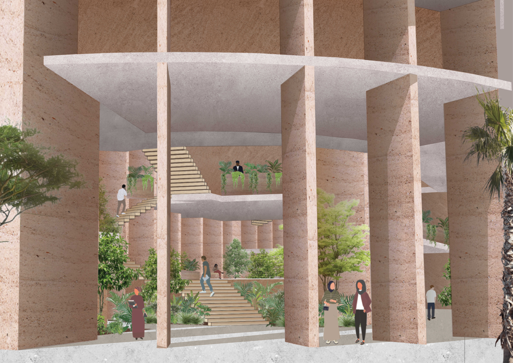
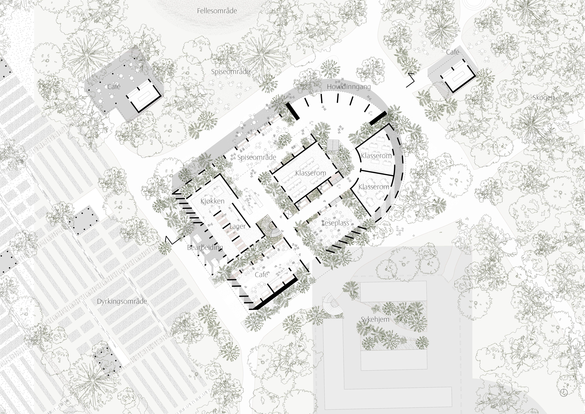
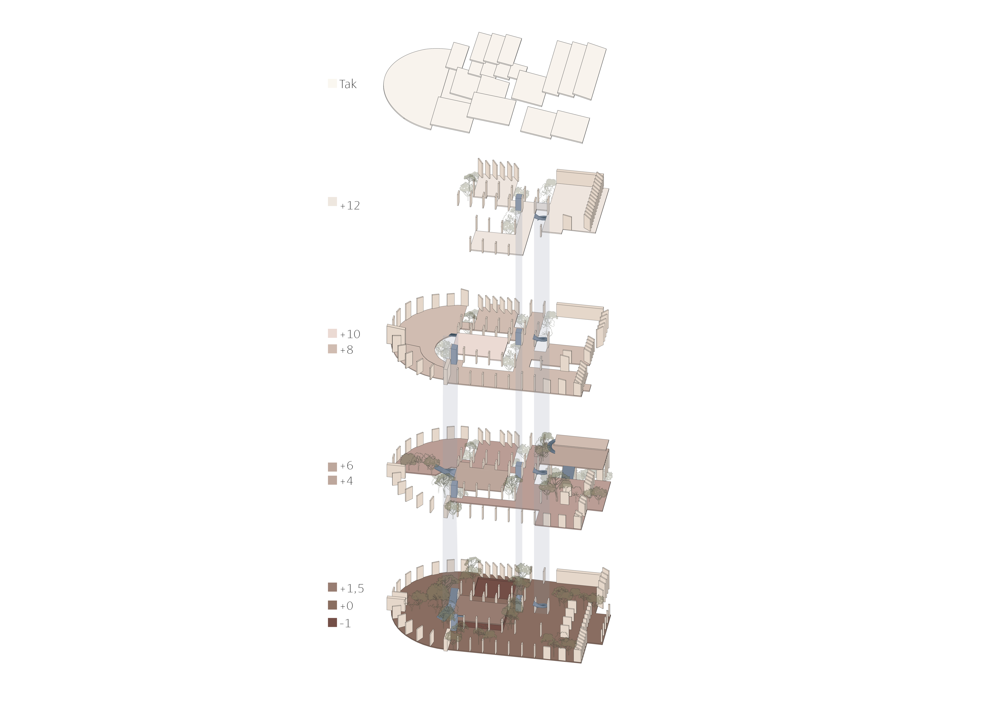
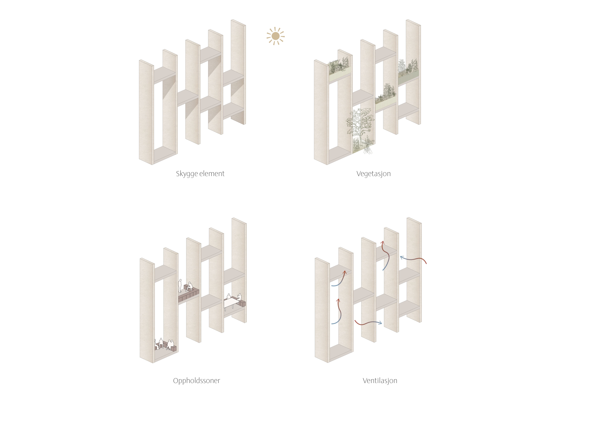
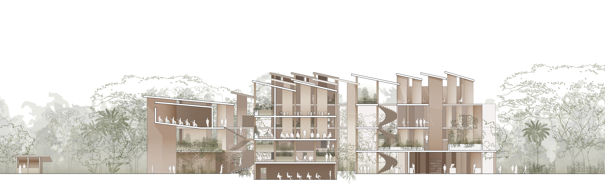
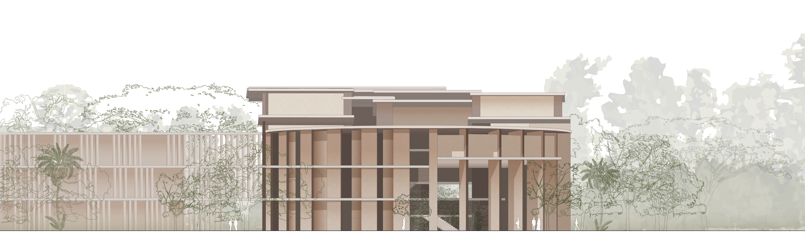
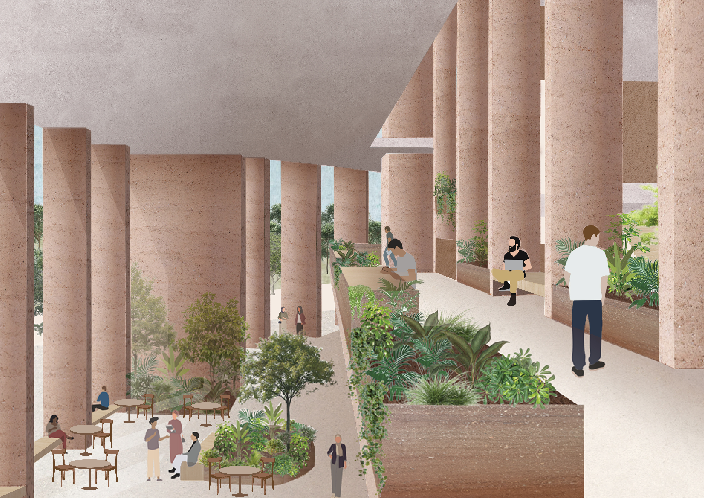
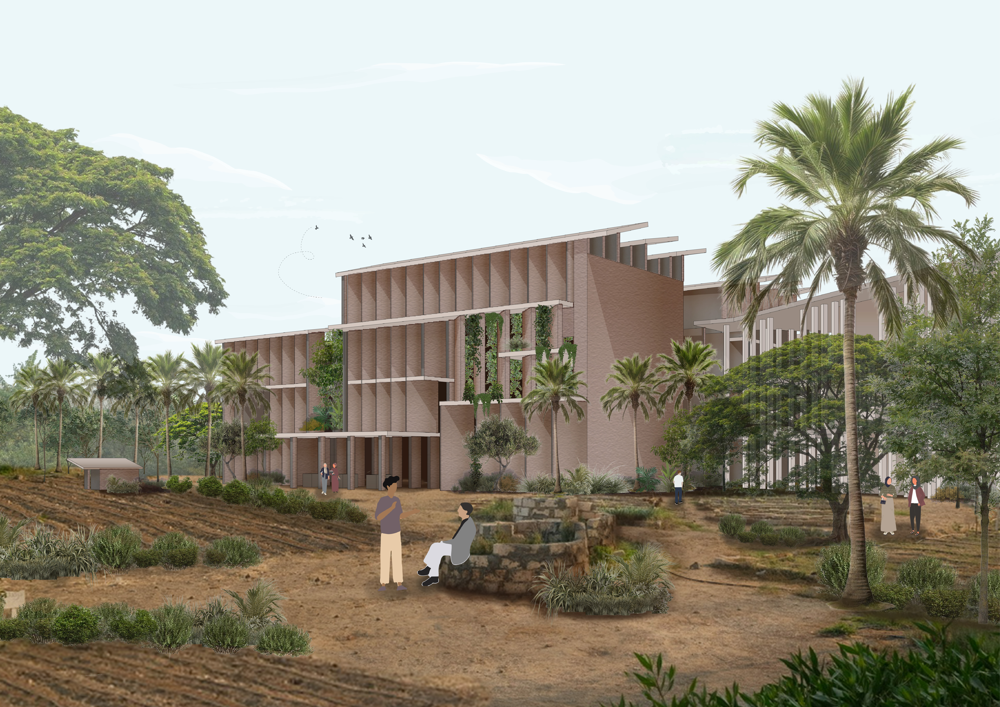
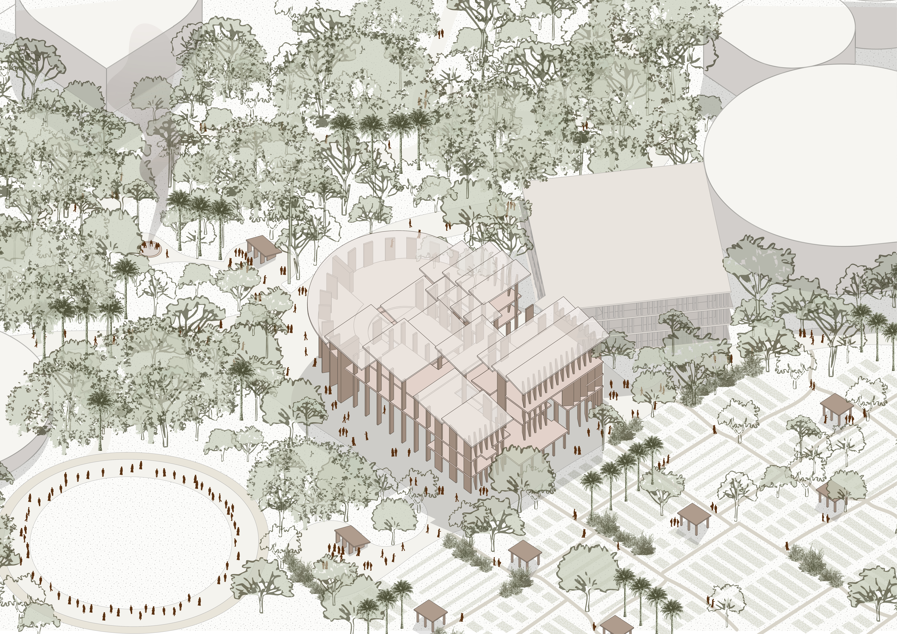

Landscapes of Learning
Prosjektet ligger i utkanten av Kairo, der Nildeltaen møter ørkenen, som en del av det nye SEKEM Unicampus. Her samles fakultetet for helsefag med kjøkken- og spiseområder rundt en gjennomgående, tykk vegg som definerer fasaden og samtidig fungerer som et multifunksjonelt element innvendig. Klimautfordringene i landskapet møtes gjennom en design som spiller på strategisk plassering av skygge, materialitet og passive strategier, der et grønt, dyrket miljø spiller en avgjørende rolle. Vegetasjonen er dermed en integrert del av både ute- og innerom, som flyter inn i hverandre gjennom åpninger, grønne soner og doble takhøyder. Prosjektet responderer på omgivelsene med jordbruk i vest, sykehus i sør, skog i øst og en sosial sone i nord.



Aksonometrien viser alle etasjene i bygningen, og hvordan varierende etasjehøyde skaper romlig mangfold og god luftflyt. Strategisk plasserte atrier lar vegetasjonen vokse fritt på tvers av etasjene, og bidrar til et mer behagelig inneklima. Den tykke veggen og kommunikasjonskjernene er bygningens vertikale bindeledd, og fyller flere funksjoner underveis: oppholdssoner, vegetasjonslommer, skygge og naturlig ventilasjon.




